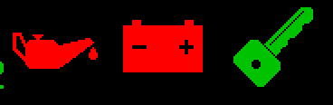
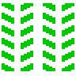
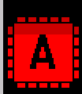

Indicateurs de l'écran d'accueil
Chaque indicateur de l'écran d'accueil avec tous ses états — ce que vous voyez, ce que cela signifie, ce qu'il faut faire.
L'emplacement de chaque indicateur est montré dans L'écran d'accueil. Cette page dit ce que signifie chacun, état par état.
Comment lire un indicateur


Presque tous les indicateurs suivent la même règle. Apprenez-la une fois et vous saurez lire un indicateur que vous n'avez jamais vu.
| Ce que vous voyez | Ce que cela signifie |
|---|---|
| Normal. L'appareil répond et sa valeur est dans les limites. | |
| Alarme. L'appareil répond, mais la valeur est sortie des limites. Une fenêtre d'alarme suit après la temporisation d'alarme. | |
| Pas de réponse de l'appareil. La valeur s'affiche XXXX. | |
| L'appareil est dans le profil, mais sa surveillance est désactivée. La valeur s'affiche !!!!. | |
| Icône alternant avec un ? rouge | Un appareil d'un mauvais type répond à sa place. La valeur s'affiche ????. |
| Pas un défaut. Un état que vous avez choisi ou qui demande votre attention : machine relevée, traceurs relevés, contact coupé, application verrouillée à la main. |
Vitesse

La vitesse d'avancement en km/h. Les messages relatifs à la vitesse remplacent le chiffre et clignotent environ une fois par seconde, afin que le chiffre reste lisible.
| Ce que vous voyez | Ce que cela signifie |
|---|---|
| Un nombre en blanc, par ex. 10.0 | Normal. |
| « SLOWER » (plus lentement) sur fond rouge | Vous roulez plus vite que le maximum réglé pour le capteur de vitesse. Ralentissez. |
| « FASTER » (plus vite) sur fond rouge | Vous roulez plus lentement que le minimum. Accélérez. |
| XX.X en rouge | Pas de réponse du module d'entrée qui porte le capteur de vitesse. |
| ???? en rouge | Un appareil d'un mauvais type répond à la place du capteur de vitesse. |
| Un nombre jaune alternant avec « IMITATION » (simulation) | La vitesse est simulée d'après le réglage du capteur de vitesse, non mesurée. Rien de ce qui dépend de la vitesse n'est réel. Voir Travailler sans capteur de vitesse. |
| INCREASE IMITATION / DECREASE IMITATION | La vitesse simulée elle-même est hors de la plage admise. Modifiez le réglage, pas la vitesse d'avancement. |
| Sensor1 / Sensor2 | Un des deux capteurs de vitesse est en panne. |
| « Settings » (réglages) | Les vitesses minimale et maximale se contredisent. |
« SLOWER » et « FASTER » ne sont pas des fenêtres d'alarme. Ils restent dans le champ de vitesse tant que la vitesse est incorrecte, car vous devez les voir pendant que vous la corrigez. Voir Alarmes du capteur de vitesse.
Horloge
La case de l'horloge, en haut à droite, est partagée par plusieurs messages.
| Ce que vous voyez | Ce que cela signifie |
|---|---|
| L'heure en blanc | Normal. |
| BAT en rouge, environ une seconde sur quatre | La pile de l'horloge est faible. L'horloge fonctionne encore ; entre les éclairs, l'heure est affichée en rouge. Faites remplacer la pile. |
| XX:XX en rouge, clignotant | La puce d'horloge ne répond pas. Le panneau n'a ni date ni heure ; tout ce qu'il enregistre porte une date et une heure fausses. |
| IMITAT en jaune | Le mode de simulation du menu Service est activé. |
| Heures:minutes en bleu, puis TRIAL, puis vide | Une période d'essai est en cours ; le chiffre bleu est le temps restant. Lorsque la première ligne n'a pas de place pour l'horloge, ce cycle n'apparaît que de temps en temps. |
Carte mémoire

Indique qu'une carte microSD est dans le logement. Deux états seulement : l'icône est là, ou elle n'y est pas.
Trémie


Une trémie pleine et verte est normale. Une trémie vide et rouge signifie que le niveau est tombé sous le capteur : remplissez. Voir Alarmes de trémie.
Doseur


La rotation de l'arbre du doseur. Tant que l'arbre tourne, l'icône tourne — le moyen le plus rapide de voir que le doseur fonctionne réellement. Rouge signifie pas de rotation, ou pas la vitesse requise. Voir Alarmes de rotation.
Turbine
La vitesse de la turbine en tours par minute. Vert est normal ; rouge — au-dessus du maximum ou sous le minimum. La × et le [!] ont leur signification habituelle.
Pression

La dépression ou la pression d'air dans le circuit de distribution, en kPa. Vert est normal ; rouge — au-dessus ou sous la plage admise. Voir Alarmes de pression.
Capteurs du moteur



Les capteurs du moteur qui entraîne la turbine.
| Indicateur | Vert | Rouge ou jaune |
|---|---|---|
| Pression d'huile | Normal | Rouge : la pression d'huile est tombée sous le niveau admis. |
| Charge de la batterie | Normal | Rouge : la batterie n'est pas chargée. |
| Allumage | Clé verte : contact mis, les capteurs du moteur sont surveillés | Clé jaune : contact coupé. Pas un défaut — mais le moteur n'est pas surveillé non plus. |
| Niveau de carburant | Normal | Rouge : il reste peu de carburant dans le réservoir. |
| Filtre à air | Normal | Rouge : le filtre à air est colmaté ; nettoyez-le ou remplacez-le. |
Surface

La surface traitée sur le champ actif, en hectares.
Densité de semis

En mode « Precise » (précis) : la dose réelle de semis en milliers de graines par hectare (ths/ha).
Dose de produit en masse


Affiché lorsque les doseurs appliquent des produits en masse ; un indicateur par produit, avec son numéro. Il montre la dose en kg par hectare.
| Ce que vous voyez | Ce que cela signifie |
|---|---|
| Icône verte | Normal. La machine applique ce qu'on lui a demandé. |
| Icône rouge, clignotante | La dose réelle est hors de l'écart admis par rapport à la consigne. |
| Champ éclairé, chiffre clignotant | La consigne est en cours de réglage. Touchez et maintenez le champ pour saisir la consigne sur le pavé numérique, ou utilisez « PLUS » / « MINUS ». |
| Champ éclairé, sans clignoter | Le réglage est actif, mais c'est un autre champ de dose qui est modifié. Celui-ci montre sa consigne et attend. |
Dosage en masse impossible
Une icône de produit rouge clignotante au bord droit. Le panneau a calculé que la consigne ne peut être tenue à aucune vitesse d'avancement : la vitesse la plus basse à laquelle les cannelures doseuses peuvent débiter la dose est déjà égale ou supérieure à la plus haute.
Que faire. Contrôlez d'abord les doses de consigne — un produit qui en demande trop ferme la plage pour tous. Contrôlez ensuite les cannelures doseuses : une cannelure d'une autre taille peut être nécessaire. Les limites de vitesse calculées par le panneau figurent sur l'écran « Information » (informations) du capteur de vitesse. Voir Alarmes de dosage en masse.
Traceurs

| Ce que vous voyez | Ce que cela signifie |
|---|---|
| Vert, deux bras abaissés | Les deux traceurs sont abaissés. |
| Vert, un bras abaissé | Seul ce traceur est abaissé — gauche ou droit, comme dessiné. |
| Jaune, deux bras relevés | Les deux traceurs sont relevés. Pas un défaut ; sur une machine qui change le passage de jalonnage par les traceurs, le passage change maintenant. |
Position de travail


Vert — abaissée, en travail. Jaune — relevée, en transport, sans application.
Passage de jalonnage

Affiché uniquement si le jalonnage est activé. Le grand chiffre est le passage en cours, le petit en dessous le nombre de passages du rythme.
| Ce que vous voyez | Ce que cela signifie |
|---|---|
| Chiffres du passage, par ex. 1 sur 3 | Où vous en êtes avant le prochain jalonnage. |
| Icône de jalonnage grise | Le passage change tout seul. |
| Icône de jalonnage jaune | Le passage ne change pas tout seul : le changement automatique est désactivé, ou le capteur dont il dépend est absent, muet ou hors surveillance. Changez-le à la main. |
Voir Passer au passage de jalonnage suivant.
Verrouillage manuel

Une main jaune, clignotante, au bord droit : l'application du produit est verrouillée à la main. La machine n'applique rien, quoi qu'elle fasse. Pas affichée du tout tant que l'application est autorisée. Elle apparaît sur les machines à moteurs électriques de doseur ou à pompe d'engrais liquide. Voir Verrouiller l'application à la main.
Défaut d'actionneur


Une seule icône pour tous les moteurs électriques et actionneurs de jalonnage réunis. Pas affichée du tout tant que tout est en ordre.
| Ce que vous voyez | Ce que cela signifie |
|---|---|
| Rouge, clignotante | Au moins un moteur ou un actionneur est en état d'alarme. |
| Alternant avec un [!] blanc | La surveillance d'au moins un actionneur est désactivée. Aucun défaut connu — mais cet actionneur n'est pas surveillé. |
Lequel et pourquoi, c'est sur l'écran Motors.
Pompe d'engrais liquide
Selon l'équipement, la pompe a deux ou trois indicateurs.
| Indicateur | Ce qu'il montre |
|---|---|
| L'indicateur principal. Son menu contextuel contient les paramètres de la pompe. | |
| L'effort de la pompe. Il disparaît en premier quand l'écran n'a pas de place pour lui. | |
| Seulement si le capteur de pression est monté et activé dans les réglages du calculateur de pompe. |
Débit. Outre le vert, le rouge, la × et le [!] : une pompe jaune avec STOP — l'application est verrouillée à la main ou la machine est relevée, et la pompe ne démarrera pas quand la machine avance ; un chiffre de consigne éclairé — le profil ne comporte pas de capteurs de débit de section, le chiffre est donc la consigne, non une mesure.
Charge. À 99 % et plus, elle passe au jaune : la pompe est à sa limite et ne peut pas suivre une vitesse plus élevée. Roulez plus lentement, sinon la dose tombe sous la consigne. ---- clignotant en rouge : le calculateur ne donne pas de valeur de charge.
Pression. Rouge signifie que la pression du liquide est trop élevée — réduisez la vitesse, ou augmentez « Max pressure, Bar » (pression max.) dans les réglages du calculateur de pompe si la conduite peut vraiment la supporter. ---- clignotant en rouge : le capteur de pression est défectueux ou ne donne aucune valeur. Voir Alarmes du calculateur de pompe.
Votre machine fait quelque chose que cette page n'explique pas ? Écrivez à support@agriwelt.com — un ingénieur vous répond.